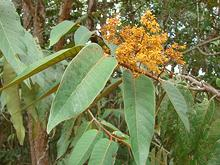
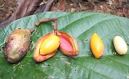
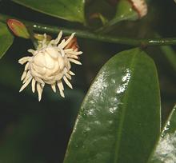

SAFARI
Users
Nutmeg & Mace
- [Myristica fragrans]

Less important than it was in Medieval times, nutmeg is still used in many European recipes, particularly in sauces and beverages, but also in baked goods and with vegetables. Mace is a wrapper around the nutmeg seed which is treated separately. Mace has a lighter, more fruity flavor while nutmeg is sweeter and stronger, so they find application in different kinds of recipes (and sometimes together). The fruit itself is also used in the regions where nutmeg grows. Details and Cooking.
Nutmeg is known to have psychoactive properties, and some nutmeg
relatives in South America have very strong psychoactive properties,
but these are not relevant to a culinary site. Nutmeg is so highly
toxic to some animals, dogs, for instance, that culinary quantities
harmless to people can be deadly.
Rampatri
- [Rampatri (Hindi); Kattujathikka, Kottappannu, Panampalka,
Pathiripoovu, Ponnampannu, Ponnampayin, Ponnampu (Malayalam);
Kanage, Doddajajikai (Kannada); Myristica malabarica]

This intensely aromatic spice is from trees native to swampy areas
along the Western Ghats (mountain range) of India, and used in
masalas (spice mixtures) in the region, particularly Karala. The
appearance is much like Mace, but much larger and more dense. The
aroma and flavor are much darker and less fruity than mace. The trees
are Red List VU (Vulnerable) due to draining of the marshes in which
they live for agriculture. The photo specimens, up to 2.4 inches long,
were purchased from an export house in India for 2014 US $9.99 / 50
grams (1-3/4 ounce).
Virola
- [Virola sebifera, Virola elongata and other
species of genus Virola]

Trees of the Virola genus, native to the tropics of Central and South
America, bear fruits very much like nutmegs, including the mace-like red
wrapper around the pit. They smell similar to nutmeg, but I've found no
evidence either the wrapper or pit are used as a spice. These trees are
noted mainly for intense psychoactive properties, use by shamans and
spiritual seekers throughout the region. The pits of some species are used
industrially to extract oil similar to cocoa butter, used to make soap
and candles. The photo is of Virola sebifera, popular for both uses.
Photo by João Medeiros distributed under license
Creative Commons
Attribution-ShareAlike 2.0 Unported.
Ramtamul
- [Ramtamul (Assamese); Horsfieldia kingii]

This small tree (up to 20 feet high) native to the far northeast of India
(Assam) and nearby regions, produces fruit the kernel of which is used
as a substitute for betel nut in the Paan chew. It is mildly intoxicating
to humans, but probably no more dangerous than betel nut. The fruit
surrounding the kernel is very much liked by imperial pigeons.
Photo by Nandini Velho distributed under license
Creative Commons
Attribution 3.0 Unported.
Bolwarra
- [Native Guava, Copper Laurel; Eupomatia laurina of
family Eupomatiaceae]

This small tree (up to 16 feet high) native to eastern Australia and
New Guinea, produces yellow fruit about 3/4 inch diameter filled with an
edible jelly embedded with inedible seeds, looking similar to a guava.
The fruit is sweet, aromatic and spicy, used in cooking beverages, jams
and deserts. Because if it's strong flavor, it is categorized as a spice
in Australia.
Photo by Casliber distributed under license
Creative Commons
Attribution 3.0 Unported.